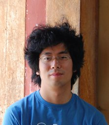
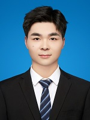

研究方向
🧠 深度学习与类脑智能
AI for Science & 多模态生物大模型
聚焦深度学习、人工智能与神经科学的交叉，构建多模态生物大模型，推动AI在生命科学、医学和脑科学中的创新应用，探索智能系统的类脑机制。
🧬 神经生物学
神经元网络结构与动力学机制探究
研究神经元网络的结构、动力学特性及其对信息处理和认知功能的影响，结合理论建模、实验数据与AI方法，揭示神经系统的运行机制。
🔬 多模态成像方法
多模态成像技术开发与建模分析
开发和应用多模态成像技术，结合AI分析，深入探究神经生物学中的关键现象，推动脑科学的前沿发展。
团队成员


安家良
硕士研究生
关注多模态生物大模型的开发与应用。
邱
邱硕文
博士研究生
研究方向为神经元网络建模与动力学分析。
姜
姜蕴涵
博士研究生
专注于神经生物学现象的实验与数据分析。
代表性学术成果
Graphene Microelectrode Arrays, 4D Structured Illumination Microscopy, and a Machine Learning Spike Sorting Algorithm Permit the Analysis of Ultrastructural Neuronal Changes During Neuronal Signaling in a Model of Niemann–Pick Disease Type C
Advanced Science, 2024.
ERnet: a tool for the semantic segmentation and quantitative analysis of endoplasmic reticulum topology
Nature Methods, 2023.
The structure and global distribution of the endoplasmic reticulum network are actively regulated by lysosomes
Science Advances, 2020.
Structural progression of amyloid-β Arctic mutant aggregation in cells revealed by multiparametric imaging
J. Biol. Chem., 2019.
A mathematical framework of intelligence and consciousness based on Riemannian Geometry
arXiv, 2024.
Advances in the study of organelle interactions and their role in neurodegenerative diseases enabled by super-resolution microscopy
Neurobiology of Disease, 2021.
Synthetic peptides derived from sea cucumber alleviate oxidative stress in neuroblastoma cells and improve survival in Caenorhabditis elegans exposed to neurotoxic paraquat
Oxidative Medicine and Cellular Longevity, 2021.
Advanced fluorescence imaging of in situ protein aggregation
Physical Biology, 2020.
新闻动态
2024年6月
实验室招收首批研究生
欢迎对AI与神经生物学交叉感兴趣的同学加入卢萌实验室！
2024年1月
卢萌实验室正式成立
卢萌实验室于2024年1月在北京大学医学部成立，致力于AI for Science、神经生物学与多模态成像等交叉前沿研究。
联系我们
地址
北京市海淀区北京大学（学院路校区）医学科技楼北楼411实验室
邮箱
menglu@pku.edu.cn